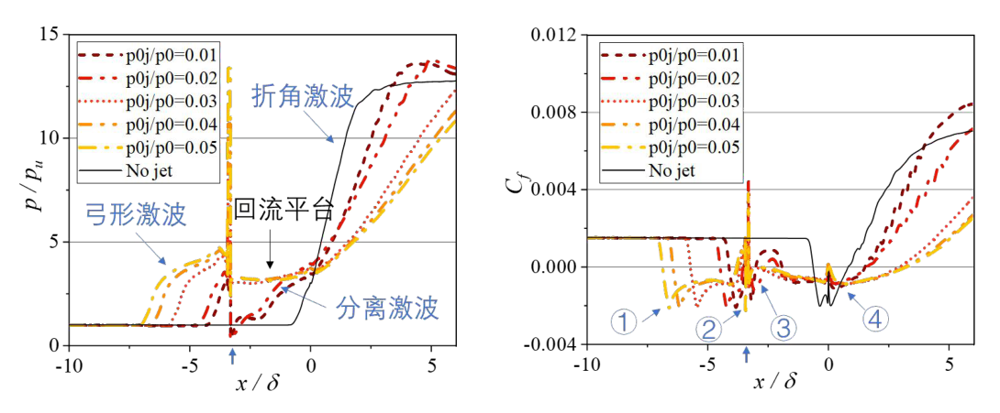
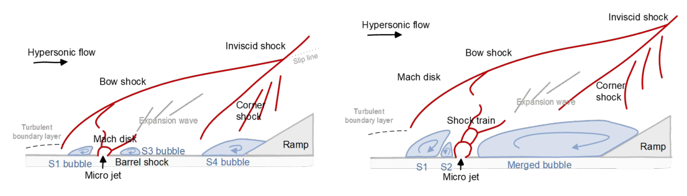
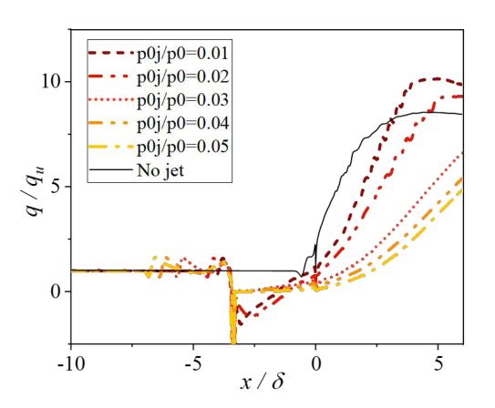
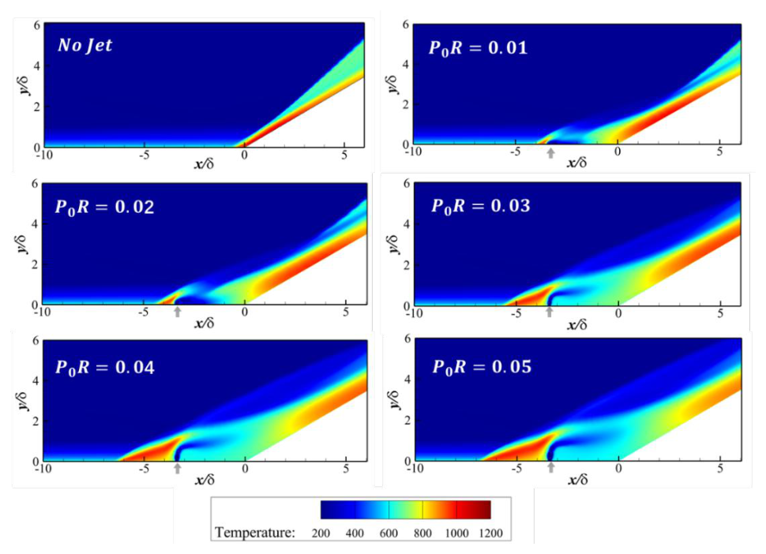

01中文摘要
以马赫5压缩斜坡产生的激波/湍流边界层干扰为对象，在干扰上游壁面布置狭缝微射流，采用经验证的RANS方法研究微射流对干扰区气动热的控制效果与机理，并分析射流参数影响。微射流产生弓形激波、桶形激波或激波节等波系并与主激波干扰，主回流涡扩大并与下游回流涡相互作用，据此归纳出两种基本流场形态。微射流可有效降低目标区热流，优选工况最大下降74%；低总温流体的覆盖隔热与破坏回流涡升温机制是防热关键。射流压比、马赫数和位置影响较大，射流倾角和温度影响较小。
原始摘要（英文/原文）
在高速气流中,飞行器表面激波干扰会导致严重的气动热从而影响飞行安全,而近年来微射流作为一种有潜力的流动控制方法受到了关注。本文以来流为5 Ma的压缩斜坡产生的激波湍流边界层干扰为基本对象,在干扰上游壁面布置狭缝微射流,采用经验证的RANS方法研究了微射流对干扰区域气动热的控制效果与机理,并进一步分析了不同射流参数的影响规律。结果表明,流场在微射流控制下出现了弓形激波、桶形激波或激波节等复杂波系结构与主激波发生干扰,主回流涡扩大并与微射流下游回流涡相互作用。基于回流涡变化本文区分并提炼出了两种微射流控制下激波湍流边界层干扰的基本流场形态,获得了流场主要的气动特征及其变化规律。本文发现微射流可有效降低激波干扰后目标区域内的热流,优选工况下最大下降了74%,并进一步揭示了低总温流体的覆盖隔热与干扰区回流涡升温机制的破坏是决定微射流防热效果的关键。多参数分析表明,射流压比、射流马赫数、射流位置对微射流的气动热控制效果有较大影响,而射流倾角、射流温度对微射流的控制效果影响较小,这表明微射流主要通过流场控制实现了气动热控制。综上所述,微射流对激波湍流边界层干扰区域的气动热存在积极的控制效果,本文的研究为从源头上开展极端气动热防护提供了一种思路。 更多 还原 AbstractFilter('ChDivSummary', 'ChDivSummaryMore', 'ChDivSummaryReset');
02阅读说明
类型：中文会议论文（2024，19页，清华大学能源与动力工程系）。材料为19页全文文本与16幅抓取图件；PDF文本层可读，但公式与部分下标在OCR中丢失或错位（如 p0j/p0、xj/d、Tj/T0 显示为乱码），图内坐标无法逐点读取。信息完整度中等偏上：几何、来流、射流工况、两组验证与多参数结果较完整；网格无关性细节、不确定度、瞬态热流与三维效应均未给出。全文没有从控制方程出发的解析推导，属RANS数值参数研究。 文章类型：会议
03一句话核心与三句话摘要
Ma=5压缩斜坡狭缝微射流使STBLI斜面平均热流最多降低74%，并揭示弱/强干扰两态与冷气覆盖—回流升温破坏机制。
- 高超声速激波/湍流边界层干扰（STBLI）造成严重局部气动加热，微射流虽已被用于分离控制，但其气动热控制机理与多参数规律尚不系统。 AI概括
- 本文对 Ma=5、30°压缩斜坡、δ=9 mm 的 STBLI，在理想激波入射点上游30d处布置 d=1 mm 狭缝微射流，用 Realizable k-ε RANS 计算 p0j/p0=0.01–0.05 以及射流位置、倾角、马赫数、温度的影响。 原文明确
- 结果显示 p0j/p0 从0.02增至0.03时流场由弱干扰突变为强干扰，最优工况斜面平均热流降低74%，机理是低总温冷气覆盖隔热与回流涡升温机制被破坏；压比、马赫数、位置影响大，倾角、温度影响小。 原文明确
04核心内容清单
| 要点 | 类型 | 重要性 | 原文依据 | 属性 |
|---|---|---|---|---|
| 微射流控制下存在两种基本流态：p0j/p0≤0.02 为弱干扰，p0j/p0≥0.03 为强干扰；阈值处流场发生突变。 | 核心结论 | A | p6–7，3.1节，图6 | 原文明确 |
| 由弱到强，射流波系从桶形激波/马赫盘变为激波节，射流后回流涡③与角区主回流涡④合并，弓形激波增强前移、分离激波消失并出现压力平台。 | 流动机理 | A | p6–8，3.1节，图6–9 | 原文明确 |
| p0j/p0=0.05 时最大热流下降45%，斜面平均热流下降74%，为全文最优防热工况。 | 定量结果 | A | p9，3.2节，图10；p17 结论(2) | 原文明确 |
| 防热机理是低总温冷却气覆盖隔热，加上大范围低温回流涡破坏原有回流涡升温机制，二者共同决定效果。 | 机理解释 | A | p9，3.2节，图11；p17 结论(2) | 原文明确 |
| xj/d=-30 为位置扫描最优：斜面最大热流下降24%、平均热流下降59%；回流涡合并后继续靠近折角，热流对位置不敏感。 | 定量结果 | A | p10–11，4.1节，图12–13 | 原文明确 |
| 倾角扫描中60°最好，斜面平均热流下降19%；所有倾角均未形成回流涡合并，属弱干扰。 | 定量结果 | A | p11–13，4.2节，图14–15 | 原文明确 |
| Maj=1.0 声速射流最优：最大热流下降24%、斜面平均下降59%；Maj 增至1.5/2.0 使穿透深度与低温回流涡减弱，防热恶化。 | 定量结果 | A | p13–14，4.3节，图16–17 | 原文明确 |
| Tj=100 K 仅使斜面平均热流下降18%，温度影响弱；冷气膜向下游很快被主流加热消失。 | 定量结果 | A | p14–15，4.4节，图18–20 | 原文明确 |
| 参数敏感性排序：射流压比、马赫数、位置影响大；倾角、温度影响小；弱/强防护区分别对应弱/强干扰流态。 | 参数规律 | A | p15–16，4.5节，图21 | 原文明确 |
| 数值方法经两组验证：x=-60 mm 处 Cf 误差 -7.1%、St 误差5.6%；Delery 35°斜坡热流峰值偏大31%、斜面平均误差16%。 | 方法验证 | A | p4–5，2.3节，表1–2，图4–5 | 原文明确 |
| 采用二维稳态 RANS、Realizable k-ε、11万结构网格、y+=0.8，是全文定量结果的方法基础。 | 方法 | B | p3–4，2.1–2.2节 | AI概括 |
| 控制工况没有实验验证；0.02→0.03阈值只在一个几何/来流下观察，判别准则未给出；二维模型无法覆盖三维圆孔射流。 | 材料局限 | C | p16–17；全文 | AI概括 |
05引言：研究问题与领域缺口
第1节（p1–2）指出，高超声速飞行中 STBLI 广泛存在并导致严重局部气动加热，是长航时飞行器热防护的关键问题。作者回顾主动热防护路线：对流冷却、发汗冷却、超声速气膜冷却与逆向喷流冷却，认为它们冷却效率高但工质消耗大，或只适用于头锥驻点。随后引入微射流：孔径约为当地边界层厚度的10%（实际约1 mm），通过小尺度非线性扰动控制大尺度流动；Szwaba 最早将其用于跨声速正激波干扰，观察到分离推迟与低频振荡削弱；Verma 等在入射激波、压缩折角、三维圆柱等构型验证了减小分离区的有效性；国内陈逖、刘平超等也开展了数值与机理研究（p1–2）。缺口在于：既有微射流研究主要面向分离控制，针对 STBLI 气动热控制的效果、机理与多参数规律尚不系统。本文目标是以来流 Ma=5 的压缩斜坡 STBLI 为对象，在干扰上游布置狭缝微射流，用经DNS与实验验证的 RANS 研究其气动热控制效果与机理，并分析射流压比、位置、倾角、马赫数与温度的影响（p1、p16–17）。
06流动条件与几何构型
| 项目 | 数值/描述 | 依据 | 备注 |
|---|---|---|---|
| 来流马赫数 Ma∞ | 5 | p3，2.1节 | 压缩折角由5 Ma来流产生STBLI |
| 来流静温 T∞ | 221 K | p3，2.1节 | |
| 来流静压 p∞ | 6210 Pa（约20 km临近空间） | p3，2.1节 | |
| 壁面温度 Tw | 601 K（无滑移冷壁） | p3，2.1节 | |
| 射流温度 Tj（基准） | 300 K | p3，2.1节 | |
| 射流马赫数 Maj（基准） | 1 | p3，2.1节 | |
| 平板长度 | 560 mm | p3，2.1节 | 为与DNS对比并保证相似Reθ与δ |
| 湍流边界层厚度 δ | 9 mm | p3，2.1节 | |
| 压缩折角角度 | 30° | p3，2.1节 | |
| 射流孔直径 d | 1 mm（约为当地δ的11%） | p3，2.1节 | |
| 射流位置 | 理想激波入射点上游30d | p3，2.1节 | |
| 坐标系 | 原点在压缩折角顶点，水平为x、竖直为y | p3，2.1节 | |
| 网格数 | 11万（结构网格，经网格无关性检验） | p3，2.1节 | 网格无关性细节文中未给出 |
| 第一层网格高度 | y+=0.8（干扰区上游来流边界层） | p3，2.1节 | |
| 湍流模型 | Realizable k-ε（经与DNS对比后选用） | p4，2.2节，图3 | |
| 射流工况 p0.01 | p0j/p0=0.01；pj/p∞=3；吹风比M=0.48；G=0.07 g/s/mm | p6，表2；p16基准θ=90° | 该组基准θ=90°见p16，Maj=1、Tj=300 K见p3 |
| 射流工况 p0.02 | p0j/p0=0.02；pj/p∞=6；M=0.96；G=0.13 g/s/mm | p6，表2；p16 | |
| 射流工况 p0.03 | p0j/p0=0.03；pj/p∞=8；M=1.44；G=0.20 g/s/mm | p6，表2；p16 | 多数参数扫描的基准压比 |
| 射流工况 p0.04 | p0j/p0=0.04；pj/p∞=11；M=1.92；G=0.27 g/s/mm | p6，表2；p16 | |
| 射流工况 p0.05 | p0j/p0=0.05；pj/p∞=14；M=2.40；G=0.34 g/s/mm | p6，表2；p16 | 全文最优压比工况 |
| 位置工况 xj/d=-60 | 远上游，xj/d=-60；p0j/p0=0.03 | p10，4.1节 | |
| 位置工况 xj/d=-30 | 上游，xj/d=-30；p0j/p0=0.03 | p10–11，4.1节 | 位置扫描最优；p10对≥/≤的描述前后矛盾 |
| 位置工况 xj/d=-20 | 近上游，xj/d=-20；p0j/p0=0.03 | p10，4.1节 | |
| 位置工况 xj/d=-10 | 分离点附近，xj/d=-10；p0j/p0=0.03 | p10，4.1节 | |
| 位置工况 xj/d=-5 | 分离区内，xj/d=-5；p0j/p0=0.03 | p10，4.1节 | |
| 倾角工况 θ=120° | 逆向倾斜，θ=120°；xj/d=-30；p0j/p0=0.03；Maj=2 | p11–12，4.2节 | |
| 倾角工况 θ=90° | 垂直射流，θ=90°；xj/d=-30；p0j/p0=0.03；Maj=2 | p11–12，4.2节 | |
| 倾角工况 θ=60° | 顺流倾斜，θ=60°；xj/d=-30；p0j/p0=0.03；Maj=2 | p11–12，4.2节 | 倾角扫描最优，斜面平均热流-19% |
| 倾角工况 θ=30° | 顺流倾斜，θ=30°；xj/d=-30；p0j/p0=0.03；Maj=2 | p11–12，4.2节 | |
| 马赫数工况 Maj=1.0 | 声速射流，Maj=1.0；p0j/p0=0.03；垂直射流；基准xj/d=-30 | p13，4.3节；p16基准 | x位置取p16所述基准；p13只明示压比0.03与垂直射流 |
| 马赫数工况 Maj=1.5 | 超声速射流，Maj=1.5；p0j/p0=0.03；垂直射流；基准xj/d=-30 | p13，4.3节；p16基准 | |
| 马赫数工况 Maj=2.0 | 超声速射流，Maj=2.0；p0j/p0=0.03；垂直射流；基准xj/d=-30 | p13，4.3节；p16基准 | |
| 温度工况 Tj=300 K | Tj=300 K（Tj/T0=0.50）；p0j/p0=0.03；Maj=2；30°斜射流；基准xj/d=-30 | p14，4.4节；p16基准 | |
| 温度工况 Tj=200 K | Tj=200 K（Tj/T0=0.33）；p0j/p0=0.03；Maj=2；30°斜射流；基准xj/d=-30 | p14，4.4节；p16基准 | |
| 温度工况 Tj=100 K | Tj=100 K（Tj/T0=0.17）；p0j/p0=0.03；Maj=2；30°斜射流；基准xj/d=-30 | p14，4.4节；p16基准 | 温度扫描最优，斜面平均热流-18% |
| 验证工况1（DNS） | x=-60 mm；Ma=5；Reθ=4650；Cf=1.63×10^-3；St=9.34×10^-4；δ=10.6 mm | p5，表1，图4 | |
| 验证工况2（RANS k-ε） | x=-60 mm；Ma=5；Reθ=4670；Cf=1.51×10^-3；St=8.82×10^-4；δ=9.0 mm；误差Cf -7.1%、St 5.6% | p5，表1，图4 | |
| 验证工况3（Delery 1991） | 35°压缩斜坡；Ma=5；ReL=1×10^7；Tw/T0=0.58；Tw/Tr=0.64；热流峰值+31%、斜面平均误差16% | p5，表2，图5 |
07核心现象与关键参数
| 参数 | 定义 | 数值 | 关系/说明 | 依据 |
|---|---|---|---|---|
| p0j/p0 | 射流总压与来流总压之比（文中表2列总压比） | 0.01、0.02、0.03、0.04、0.05 | 控制射流强度；0.02→0.03触发弱/强干扰转变 | p6，表2 |
| pj/p∞ | 射流静压与来流静压之比 | 3、6、8、11、14 | 随p0j/p0增大而增大 | p6，表2 |
| 吹风比 M | 射流与主流的动量/质量通量比（原文记作M，OCR公式不清） | 0.48、0.96、1.44、1.92、2.40 | 随p0j/p0单调增大 | p6，表2 |
| 流量 G | 单位展长质量流量 | 0.07、0.13、0.20、0.27、0.34 g/s/mm | 随压比增大 | p6，表2 |
| xj/d | 射流位置相对折角顶点的无量纲流向坐标（d为孔径） | -60、-30、-20、-10、-5 | 越靠近折角越易触发回流涡合并 | p10，4.1节 |
| 射流倾角 θ | 射流方向与壁面的夹角 | 120°、90°、60°、30° | 60°时斜面平均热流最低（-19%），但均未触发强干扰 | p11–12，4.2节 |
| 射流马赫数 Maj | 射流出口马赫数 | 1.0、1.5、2.0 | Maj越小，穿透越深、低温回流涡越强，防热越好 | p13，4.3节 |
| Tj/T0 | 射流静温与来流总温之比 | 0.50、0.33、0.17（对应Tj=300/200/100 K） | 越低越有利于局部冷却，但对斜坡平均热流影响弱 | p14，4.4节 |
| q/q0 | 壁面热流用上游未受干扰位置热流q0无量纲化 | 最大热流降幅45%、24%；斜面平均降幅74%、59%、19%、18% | 负值/降幅表示防热效果 | p9、p11、p14，图10、13、17、19 |
| p/p0 | 壁面压力用x=-60 mm未受干扰压力p0无量纲化 | 用于识别弓形激波、分离激波、折角激波与压力平台 | 平台区出现对应大范围回流涡 | p4、p6，图3、6a |
| Cf | 壁面摩擦系数 | 用于判别回流区①–④及分离/再附 | Cf<0为回流 | p7，图6b |
| δ | 湍流边界层厚度 | 9 mm（RANS）；DNS 10.6 mm | 射流孔径d≈11%δ | p3、p5 |
| Reθ | 基于动量厚度的雷诺数 | DNS 4650；RANS 4670 | 用于验证来流边界层相似性 | p5，表1 |
08方法与数据
几何与来流（p3，图1）：平板长560 mm，以发展出 δ=9 mm 的湍流边界层；30°压缩折角；狭缝孔径 d=1 mm（约11% δ）；射流位于理想激波入射点上游30d；坐标原点在折角顶点。来流 Ma∞=5、T∞=221 K、p∞=6210 Pa（约20 km），壁面为无滑移冷壁 Tw=601 K，射流 Tj=300 K、Maj=1；入口与上边界为压力远场，出口为超声速压力出口，射流为压力入口（p3）。数值方法（p3）：密度基耦合求解二维稳态可压缩理想气体 RANS 方程，Sutherland 粘性，隐式迭代，AUSM 矢通量分裂，结构网格11万，干扰区上游第一层网格 y+=0.8。湍流模型（p4，图3）：以无射流 STBLI 的 DNS 为基准比较 Realizable k-ε、SST k-ω、Spalart-Allmaras 与雷诺应力模型；SST k-ω 明显高估分离并给出与 DNS 定性不符的压力平台，SA/RSM 略好但仍偏大，RSM 下游出现非物理压力波动；最终选 Realizable k-ε。验证（p4–5，表1、图4–5）：x=-60 mm 处与 DNS 比，Reθ 4650/4670，Cf 1.63×10^-3/1.51×10^-3（相对误差 -7.1%），St 9.34×10^-4/8.82×10^-4（5.6%），δ 10.6/9.0 mm；再用 Delery 1991 的35°压缩斜坡（Ma=5、ReL=1×10^7、Tw/T0=0.58、Tw/Tr=0.64）验证，压力平台范围吻合但数值偏高，热流峰值偏大31%、斜面平均热流误差16%（p5，表2）。射流工况（p6，表2）：p0j/p0=0.01/0.02/0.03/0.04/0.05，对应 pj/p∞=3/6/8/11/14、吹风比 M=0.48/0.96/1.44/1.92/2.40、流量 G=0.07/0.13/0.20/0.27/0.34 g/s/mm。多参数扫描（p10–15）：xj/d=-60/-30/-20/-10/-5；θ=120°/90°/60°/30°；Maj=1.0/1.5/2.0；Tj=300/200/100 K。
| 项目 | 内容 | 依据 | 备注 |
|---|---|---|---|
| 研究类型 | 二维稳态 RANS 数值参数研究（无解析推导、无控制工况实验） | p3–6 | |
| 控制方程 | 密度加权平均二维稳态可压缩理想气体 Navier–Stokes 方程 | p3，2.1节 | |
| 粘性模型 | Sutherland 公式 | p3，2.1节 | |
| 求解器 | 密度基耦合求解器，隐式迭代，AUSM 矢通量分裂 | p3，2.1节 | |
| 网格 | 结构网格11万；近壁、射流附近与折角激波附近加密；y+=0.8 | p3，2.1节，图2 | 网格无关性检验细节文中未给出 |
| 边界条件 | 入口/上边界压力远场；壁面无滑移、Tw=601 K；出口超声速压力出口；射流压力入口 | p3，2.1节 | |
| 湍流模型 | Realizable k-ε；与SST k-ω、SA、RSM对比后选用 | p4，2.2节，图3 | |
| 验证1 | 高超声速湍流边界层：与DNS比Cf、St、速度/温度剖面 | p4–5，2.3节，表1，图4 | |
| 验证2 | Delery 1991 35°压缩斜坡强干扰：压力平台、热流峰值与斜面平均 | p5，2.3节，表2，图5 | |
| 参数扫描 | 压比5组、位置5组、倾角4组、马赫数3组、温度3组；其余条件固定 | p6、p10–15 | |
| 结果处理 | 壁面压力、摩擦系数、热流、温度场与流线/波系结构对比；热流用上游q0无量纲化 | p6–15，图6–21 | |
| 不确定度 | 文中未提及；无网格收敛误差、模型形式误差或实验不确定度的定量分析 | 全文 |
09核心推导与公式
原文未给出从守恒律出发的完整解析推导；以下仅列出材料中可核对的定义或建模链，不补写教科书推导。
本文是 RANS 数值研究，没有从控制方程出发的解析推导；其“推导”环节是湍流模型选择与两组验证，而非公式演绎。故不补写教科书式推导。
关键假设
- 不适用：原文没有解析推导，只有二维稳态 RANS 数值建模与验证。
适用边界：数值结果的可信度受湍流模型、二维假设与验证工况限制：Realizable k-ε 在 Delery 算例中热流峰值偏大31%，控制工况无实验验证。
10结果：主要发现与关键证据
（1）两态与波系（p6–8，图6–9）：p0j/p0≤0.02 时，随压比增大弓形激波与分离激波略增强并前移，折角升压变缓、压力峰值增大；0.02→0.03 时弓形激波突然增强并向上游偏移，分离激波消失、形成压力均匀平台区，折角激波被削弱；>0.03 后继续增压对下游平台与分离/再附位置影响很小（p6）。壁面摩擦系数显示四个回流区：弓形激波诱导的回流区①、射流前后回流区②和③、折角主激波诱导的回流区④；0.02→0.03 时③与④合并，①迅速扩大并诱导二次涡②（p7，图6b）。弱干扰（0.02）流场含桶形激波与马赫盘、射流前后回流区①/③及角区回流④；强干扰（0.03）为欠膨胀射流激波节、弓形激波与折角激波干扰形成二次压缩波系、③与④合并成大范围回流涡、无明显分离激波（p7–8，图7–9）。（2）热流与机理（p9，图10–11）：p0j/p0=0.05 时最大热流下降45%、斜面平均热流下降74%；0.02→0.03 时射流下游负热流消失并出现近绝热区，折角下游热流急降。温度场显示波后温度边界层增厚、气动加热范围变大但强度减弱；强干扰下大范围低温回流涡覆盖斜坡，阻断回流涡造成的气动热输运，把高温回流涡区变为低温回流涡区（p9）。（3）位置（p10–11，图12–13）：xj/d=-60/-30/-20/-10/-5，p0j/p0=0.03；xj/d=-30 时斜面最大热流下降24%、平均热流下降59%；回流涡合并后继续靠近折角，热流对位置不敏感（p11）。（4）倾角（p11–13，图14–15）：120°/90°/60°/30°，xj/d=-30、p0j/p0=0.03、Maj=2；所有倾角均未发生回流涡合并，属弱干扰；60°时斜面平均热流下降19%，为四者最好；倾角增大使上游弓形激波增强、上游热负荷增加（p12）。（5）马赫数（p13–14，图16–17）：Maj=1.0/1.5/2.0，p0j/p0=0.03、垂直射流；Maj 从1.0增至1.5 时强干扰转为弱干扰，大范围回流涡拆成两个小涡；Maj=1.0 时最大热流下降24%、斜面平均下降59%，为最优；Maj 增大使欠膨胀度下降、穿透深度降低、低温回流涡难以形成（p13–14）。（6）温度（p14–15，图18–20）：Tj=300/200/100 K（Tj/T0=0.50/0.33/0.17），p0j/p0=0.03、Maj=2、30°斜射流；均为弱干扰，温度对流场结构影响不明显；Tj=100 K 时斜面平均热流下降18%，冷气膜向下游很快被主流加热消失（p14–15）。（7）敏感性（p15–16，图21）：以斜面平均热流相对无射流工况的变化排序，射流压比、马赫数、位置影响大，倾角、温度影响小；弱防护I区对应弱干扰形态，强防护II区对应强干扰形态（p15–16）。
| 发现 | 证据 | 证据类型 | 强度 | 位置 | 属性 |
|---|---|---|---|---|---|
| p0j/p0 从0.02增至0.03时，流场由弱干扰突变为强干扰：弓形激波增强前移、分离激波消失、出现压力均匀平台，回流涡③与④合并。 | 图6a壁面压力平台与图6b摩擦系数回流区拓扑；0.02与0.03工况对比；p7文字描述。 | 流态转变 | 强 | p6–7，3.1节，图6 | 原文明确 |
| p0j/p0=0.05 时最大热流下降45%、斜面平均热流下降74%，为全文最优。 | 图10热流分布；p9给出45%与74%两个数值。 | 定量防热效果 | 强 | p9，3.2节，图10；p17结论 | 原文明确 |
| 防热的关键不是单纯低温工质，而是大范围低温回流涡：它覆盖斜坡并破坏原回流涡的升温机制。 | 图11温度场显示高温回流涡区变为低温区；p9明确写“覆盖隔热与回流涡升温机制的破坏是决定…关键”。 | 机理 | 强 | p9，3.2节，图11 | 原文明确 |
| 位置扫描在 xj/d=-30 取得最优：最大热流-24%、斜面平均-59%；回流涡合并后继续靠近折角，热流变化很小。 | 图13热流分布；p11给出-24%/-59%。 | 参数规律 | 强 | p10–11，4.1节，图12–13 | 原文明确 |
| 倾角扫描中60°最好，但斜面平均仅降19%，且四种倾角均未发生回流涡合并，属弱干扰。 | 图14流场结构、图15热流；p12文字。 | 参数规律 | 中 | p11–13，4.2节，图14–15 | 原文明确 |
| 声速射流 Maj=1.0 最优（最大-24%、平均-59%）；Maj 增至1.5/2.0 使穿透深度降低、低温回流涡消失，防热恶化。 | 图16流场、图17热流；p13–14文字。 | 参数规律 | 强 | p13–14，4.3节，图16–17 | 原文明确 |
| Tj=100 K 仅使斜面平均热流下降18%，温度影响弱，冷气膜向下游很快被主流加热消失。 | 图18–20温度场与热流；p14–15文字。 | 参数规律 | 中 | p14–15，4.4节，图18–20 | 原文明确 |
| 敏感性排序为：射流压比、马赫数、位置均影响大，倾角、温度影响小；强/弱防护区与强/弱干扰流态一一对应。 | 图21以斜面平均热流相对无射流工况的变化汇总全部参数；p15–16文字。 | 综合规律 | 强 | p15–16，4.5节，图21 | 原文明确 |
| 数值方法在两组独立验证中误差可接受：Cf -7.1%、St 5.6%；Delery算例热流峰值+31%、斜面平均16%。 | 表1的DNS/RANS对比；表2工况与图5压力/热流对比；p5文字。 | 方法验证 | 强 | p4–5，2.3节，表1–2，图4–5 | 原文明确 |
| 回流区拓扑包含①弓形激波诱导、②二次涡、③射流后、④角区主激波诱导四个区域；强干扰下①扩大并出现②。 | 图6b壁面摩擦系数分区；p7文字逐区命名。 | 流场结构 | 强 | p7，3.1节，图6b | 原文明确 |
11机制解释与论证链
机理可概括为“冷气覆盖 + 回流涡拓扑改造”。弱干扰（p0j/p0≤0.02）时，射流穿透浅，弓形激波与桶形激波/马赫盘只在射流附近起作用，冷气主要覆盖射流孔下游局部表面；射流前后回流区①/③与角区回流④彼此分离，折角主激波仍诱导高温回流涡，STBLI 的升温过程基本保留，因此斜面热流降幅有限（p6–7、p9）。当 p0j/p0 增至0.03，射流欠膨胀度与穿透深度增大，射流后回流涡③与角区回流④合并成大范围回流涡；合并涡把冷气抬升并穿透近壁，阻断回流涡对斜面的对流加热，同时把原本高温的回流涡区替换为低温回流涡区；弓形激波因阻碍增强而前移增强，分离激波消失并形成均匀压力平台（p6–9）。更强压比下大范围回流涡的分离/再附位置基本锁定，故热流对压比不再敏感。参数上，压比、马赫数、位置改变射流穿透与涡合并，故影响大；倾角主要改变较弱的水平动量分量，温度主要改变冷气焓值且气膜很快被主流加热，故影响小（p10–16）。
12讨论：结论、贡献与局限
第3–5节（p6–17）把结果归纳为“流场结构决定气动热”的逻辑：微射流的直接热效应（低温冷气覆盖）只在射流附近有效，真正决定斜面热流的是能否通过射流压比/马赫数/位置触发回流涡合并，形成覆盖斜坡的大范围低温回流涡；后者既把冷气抬升、穿透近壁，又破坏了原STBLI回流涡的升温机制，因此防热效果从“局部冷却”跃升为“源头上控制”（p9、p15–16）。作者据此解释参数敏感性：压比、马赫数、位置改变射流穿透深度与回流涡拓扑，故影响大；倾角主要改变射流水平动量分量，而该分量相对高速主流太弱；温度主要改变冷气焓值，冷气膜又很快被主流加热，故两者影响小（p12、p14）。讨论也显示方法的边界：二维RANS无法刻画三维圆孔射流的流向涡与展向不均匀性；Realizable k-ε 虽在两组验证中表现较好，但热流峰值仍偏大31%，说明强干扰区热流预测存在模型误差；0.02→0.03阈值只在一个几何/来流下观察到，作者未给出判别准则，只把“区分两种形态的关键因素”列为未来工作（p5、p16–17）。此外，p10 对 xj/d 的 ≥/≤ 描述前后矛盾，p13 把强、弱两态都写成“图9b”，应为笔误；这些原文表述问题在引用时需注意。
作者结论
（1）以回流涡变化为判据，微射流控制下的 STBLI 存在弱干扰（p0j/p0≤0.02）与强干扰（p0j/p0≥0.03）两种基本形态；由弱到强，射流波系从桶形激波/马赫盘变为激波节，射流后回流涡③与角区主回流涡④合并成大范围回流涡，弓形激波增强前移，分离激波消失并出现均匀压力平台（p6–8、p16–17）。（2）微射流能显著降低干扰区热流：p0j/p0=0.05 时最大热流下降45%、斜面平均热流下降74%；机理是低总温冷却气覆盖隔热，以及大范围低温回流涡破坏原有回流涡升温机制（p9、p17）。（3）参数敏感性：射流压比、马赫数、位置影响大；倾角、温度影响小。xj/d=-30 时最大热流下降24%、平均下降59%；60°时平均下降19%但未形成回流涡合并；声速射流最优（最大-24%、平均-59%）；Tj=100 K 仅使斜面平均下降18%。作者据此认为微射流主要通过改变流场结构、从源头控制气动热，而非仅靠低温工质（p10–17）。
主要贡献
- 提出并量化了狭缝微射流控制压缩斜坡 STBLI 气动热的方法，最优工况斜面平均热流降低74%。
- 识别出弱干扰/强干扰两种基本流态及 p0j/p0=0.02→0.03 的突变阈值，给出对应的波系与回流涡拓扑。
- 揭示“低总温冷气覆盖隔热 + 回流涡升温机制破坏”的防热机理，强调大范围低温回流涡的作用。
- 给出压比、位置、倾角、马赫数、温度五参数敏感性排序与设计窗口（压比0.05、xj/d=-30、60°、Maj=1）。
- 建立了经高超声速湍流边界层DNS与Delery 35°斜坡实验双重验证的二维RANS计算流程。
局限与未解决问题
（1）二维稳态 RANS：无法解析三维圆孔射流的流向涡、展向不均匀性与角区三维结构；作者把三维圆孔列为未来工作；（2）单一 Realizable k-ε 模型：虽经两组验证，但热流峰值仍偏大31%，分离区与热流预测存在模型形式误差；无网格/模型不确定度量化；（3）几何与来流单一：仅 Ma=5、30°斜坡、d=1 mm、单缝、δ=9 mm；未考察雷诺数、总焓、壁温比、δ/d 等缩放规律；（4）仅稳态平均热流：未给出脉动热流、瞬态热负荷、热应力；微射流本身可能引入非定常性，文中未讨论；（5）射流压比与马赫数通过总压耦合，未完全解耦；0.02→0.03阈值只在一个构型下观察，判别准则未给出；（6）控制工况全部为数值结果，无实验验证；作者也指出需进一步分析区分两种流动形态的关键因素；（7）原文表述存在不一致：p10 对 xj/d 的 ≥/≤ 描述前后矛盾，p13 把强、弱两态都写成“图9b”，引用时需按上下文校正。
13对高速流动与工程的意义
本文将微射流从传统的分离控制拓展到 STBLI 气动热控制，给出了可量化的防热收益（斜面平均热流最多-74%）与可操作的设计参数窗口；更重要的是提出“弱/强干扰两态”框架，把防热效果与回流涡拓扑而非单纯冷气流量联系起来，为从源头控制极端气动热提供了思路。对工程而言，压比、马赫数、位置是需优先调节的三个参数，倾角与温度是次要参数；对后续研究而言，阈值判别、三维圆孔射流与瞬态热载荷是明确的下一步。
14核心图件




15可引用原文素材
| 原文短句 | 可支持的观点 | 位置 | 使用建议 |
|---|---|---|---|
| “优选工况下最大下降了74%” | 全文最优防热收益。 | p1，摘要 | 核心结论 |
| “分离激波消失而形成了一个压力均匀的平台区” | 强干扰态的波系标志。 | p6，3.1节 | 流态判据 |
| “微射流后的回流涡③与主激波诱导的回流涡④合并” | 强弱干扰转变的涡拓扑机制。 | p7，3.1节 | 机理 |
| “热流最大值下降了45%” | 0.05压比下的峰值热流降幅。 | p9，3.2节 | 定量效果 |
| “在斜面上的平均热流下降了74%” | 0.05压比下的斜面平均降幅。 | p9，3.2节 | 定量效果 |
| “最大热流下降了24%，斜面上平均热流下降了59%” | xj/d=-30与声速射流的最优降幅。 | p14，4.3节 | 定量效果 |
| “射流倾角、射流温度对微射流的控制效果影响较小” | 参数敏感性排序的次要项。 | p17，结论(3) | 参数规律 |
| “微射流主要通过流场控制实现了气动热控制” | 全文机理解释的总括。 | p1，摘要 | 结论定位 |
16最终核验
| 核验项 | 结论 |
|---|---|
| 仅基于全文 | 仅使用 bundle 的19页全文、图注与已抓取的图件（build/figs/992）核对，未引入外部文献、教材推导或未给出的数值。 |
| A 级要点有依据 | A级要点均有页码/图表定位：两态阈值（p6–7图6）、最优热流-45%/-74%（p9图10）、机理（p9图11）、位置/角度/马赫数/温度降幅（p11图13、p13图15、p14图17、p15图19）、敏感性（p15–16图21）、验证误差（p5表1–2图5）。 |
| 属性标注 | three_sentence、core_points、findings均逐条标注【原文明确】【AI概括】【AI推断】；AI概括只用于组织原文信息，未把推断写成原文结论。 |
| 覆盖范围 | 覆盖摘要、第1节引言、第2节数值方法与验证、第3节气动热机理、第4节多参数规律、第5节结论及主要图表（图1–21、表1–2）；未抓取的图15–19、图21正文图以文字结果核对。 |
| 无编造 | 未编造页码、图号、公式或数据；OCR丢失的下标/符号（如p0j/p0、xj/d、Tj/T0）按上下文转录并标注；p10的≥/≤矛盾与p13的“图9b”笔误按原文保留并说明。 |
需回原文确认
- p0j/p0=0.02→0.03的突变阈值由什么无量纲参数控制？作者只把“区分两种形态的关键因素”列为未来工作。
- 二维狭缝结果能否推广到三维圆孔微射流？圆孔的流向涡与展向不均匀性会如何改变回流涡合并？
- Realizable k-ε 在强干扰区热流峰值偏大31%，换成LES/混合RANS-LES后74%的降幅是否仍成立？
- 微射流控制下的瞬态热流、压力脉动与热应力如何？本文只给稳态平均热流。
- 压比、马赫数、位置、倾角、温度是否存在更优组合？本文为单参数扫描，未做耦合优化。
- Re、总焓、壁温比、δ/d等缩放规律未研究，最优参数窗口能否外推到飞行器真实尺度？
- p10对xj/d≥/≤−30的强弱干扰描述前后矛盾，−30究竟属于弱干扰还是强干扰需作者澄清。
- 74%的斜面平均热流降幅是相对无射流工况还是相对上游参考热流？文中只写“下降”，需明确基准。
17关联文献
依据标签、板块、构型与作者脉络自动关联，可据此追踪同一问题的前序与后续工作。
18引用格式
选择期刊风格后复制；出处保留原刊名。BibTeX 可直接用于 LaTeX。
引用格式
唐振元, 许浩楠, 李雪英 & 任静 2024 微射流控制激波湍流边界层干扰中气动热的特性及机理. 第八届中国空天动力联合大会. https://doi.org/10.26914/c.cnkihy.2024.090346
PDF上传 PDF 并更新本页
本页缺少全文、摘要或图件时，可在浏览器本地补入 PDF。解析完全在本机完成，不上传网络；完成后会更新本页的 PDF 打开链接、原摘要、IMRaD 机器抽取、关键句与含图页面。复杂的公式语义与中文深度解读仍以原文和既有精读记录为准。